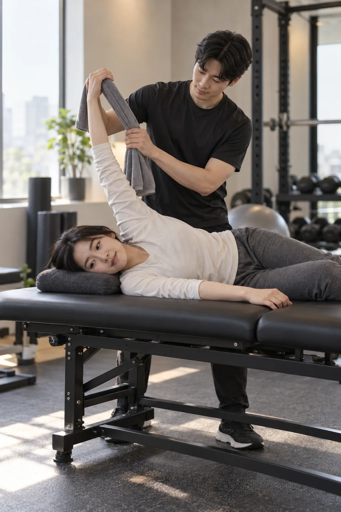

목·어깨의 뻣뻣함
컴퓨터 작업과 운전 뒤 어깨가 무겁고 팔을 들거나 돌릴 때 움직임이 답답합니다.
모티브짐 / 성복동 40대 PT
SEONGBOK PT FOR YOUR 40S
오래 앉아 일한 뒤 목과 어깨가 뻣뻣하고, 예전보다 쉽게 지치는데 무엇부터 해야 할지 막막한 40대를 위한 1:1 PT입니다. 강도를 먼저 높이기보다 움직임과 체력의 출발점을 확인합니다.

CHECK YOUR SIGNALS
일 때문에 같은 자세가 길어지고 회복은 예전보다 느려집니다. 갑자기 강한 운동을 시작하기보다 일상에서 반복되는 불편과 현재 체력을 함께 확인하는 편이 안전하고 오래가기 쉽습니다.
컴퓨터 작업과 운전 뒤 어깨가 무겁고 팔을 들거나 돌릴 때 움직임이 답답합니다.
조금만 움직여도 쉽게 지치고, 운동한 다음 날 일상에 영향을 받을까 걱정됩니다.
예전에 하던 방식은 부담스럽고 유튜브 동작을 그대로 따라 하기도 불안합니다.
HOW WE BEGIN
모티브짐은 운동 경험과 생활 패턴을 듣고, 현재 가능한 기본 동작을 확인합니다. 목표는 한 번의 고강도 수업이 아니라 일상과 함께 이어갈 수 있는 근력·체력 훈련입니다.
업무 자세, 수면, 운동 공백, 불편한 동작과 원하는 변화를 확인합니다.
서기, 앉기, 밀기와 당기기 등 기본 동작에서 편한 범위와 시작점을 찾습니다.
수행 기록과 수업 후 반응을 바탕으로 무게, 반복 횟수와 동작 범위를 조정합니다.

WHY MOTIVE GYM
모티브짐은 성복역 4번 출구에서 도보 약 2분, 데이파크 C동 206호에 있습니다. 평일은 09:00~23:00, 토·일은 10:00~18:00에 운영합니다.
김민준 대표는 물리치료 전공과 병원 재활 현장 경험, 보디빌딩 및 퍼스널 트레이닝 경험을 바탕으로 움직임과 근력, 체력을 함께 살펴 수업을 계획합니다.
운동 지도는 의료적 진단이나 치료를 대신하지 않습니다. 증상이 심하거나 갑자기 악화된 경우에는 의료기관 상담을 먼저 권합니다.
40S PT FAQ
가능합니다. 운동 공백을 고려해 현재 가능한 움직임과 체력을 확인하고, 복잡한 동작이나 높은 강도보다 반복 가능한 기본 동작부터 시작합니다.
불편함의 정도와 움직임을 먼저 확인한 뒤 무리하지 않는 범위에서 진행합니다. 심한 통증이나 의학적 판단이 필요한 상태라면 의료기관 상담을 먼저 권합니다.
가능합니다. 체중 숫자만이 아니라 근력, 체력, 운동 습관을 함께 살피고 지속 가능한 계획을 세웁니다.
1:1 PT는 10회 700,000원, 20회 1,300,000원, 30회 1,800,000원이며 부가세는 별도입니다. 50분 체험 PT는 30,000원입니다.